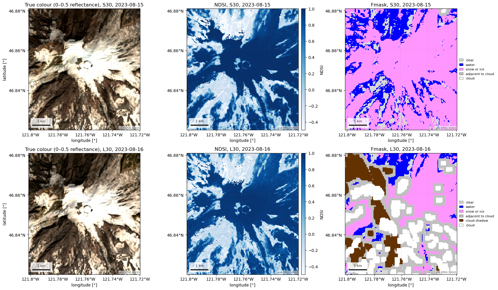

Output from an earlier build
This example could not run in the build of 2026-10-08, so the code, printed output, and figures below are from the last build in which it ran, on 2026-10-07; the download buttons give the current script. The error was: Documentation: https://egagli.github.io/easysnowdata/credentials/
Note
Go to the end to download the full example code.
HLS surface reflectance (Landsat and Sentinel-2)#
NASA’s Harmonized Landsat Sentinel-2 (HLS) v2.0 puts Landsat 8/9 (the L30 product) and Sentinel-2 (S30) on one 30 m grid with a common atmospheric correction, band-pass adjustment and BRDF normalisation, so the two constellations read as one 2–3 day revisit. Each granule carries the Fmask quality layer and the sun and view angles.
The default route is NASA’s CMR-STAC LPCLOUD catalog, the archive of
record: the search is open, but the COG reads need an Earthdata Login (a
~/.netrc entry or EARTHDATA_TOKEN). source="planetary-computer"
reads Microsoft’s credential-free mirror of the same files.
The figures show a Sentinel-2 day and a Landsat day one day apart as true-colour composites, as NDSI and as Fmask classes, and the last cell checks the mirror against the archive of record.
AOI(bounds=(-121.8000, 46.8200, -121.7200, 46.8800), clip=True)
Where the product comes from, and what each route asks for.
for src in esd.catalog.get("hls").sources:
print(f"{src.id:22} {src.title:45} {', '.join(src.requires) or 'no account'}")
lpcloud-cmr-stac CMR-STAC LPCLOUD earthdata
planetary-computer Planetary Computer no account
Search both products at once. The frame says which product and which satellite each granule came from, read from STAC properties rather than from the per-granule XML the old class scraped.
items_gdf = esd.optical.hls.search(aoi, "2023-08-15/2023-08-16", cloud_cover=20)
print(items_gdf[["datetime", "product", "platform", "eo:cloud_cover"]].to_string())
datetime product platform eo:cloud_cover
HLS.S30.T10TET.2023227T185919.v2.0 2023-08-15 19:11:24.152000+00:00 S30 sentinel-2a/b 1
HLS.S30.T10TES.2023227T185919.v2.0 2023-08-15 19:11:46.665000+00:00 S30 sentinel-2a/b 0
HLS.L30.T10TES.2023228T185535.v2.0 2023-08-16 18:55:35.330000+00:00 L30 landsat-8/9 0
HLS.L30.T10TET.2023228T185535.v2.0 2023-08-16 18:55:35.330000+00:00 L30 landsat-8/9 0
Load both days into one Dataset stacked on time, with a product
coordinate. No Fmask mask is applied here, deliberately: the cell after the
figure shows why.
hls_ds = esd.optical.hls.load(
aoi, items=items_gdf, bands=["blue", "green", "red", "swir16", "Fmask"]
).compute()
print(hls_ds["time"].values, hls_ds["product"].values)
ndsi_da = (hls_ds["green"] - hls_ds["swir16"]) / (hls_ds["green"] + hls_ds["swir16"])
ndsi_da.attrs = {"long_name": "NDSI (green − SWIR 1.6 µm)"}
ndsi_da
['2023-08-15T19:11:24.152000' '2023-08-16T18:55:35.330000'] ['S30' 'L30']
Fmask is a bit field (cirrus, cloud, adjacent, shadow, snow/ice, water, and two aerosol bits), not a class map. To draw it, one class per pixel is picked in priority order and given CF flag attributes so the legend comes from the array itself.
bits = esd.processing.masks.FMASK_BITS
fmask_da = hls_ds["Fmask"]
classes = np.zeros(fmask_da.shape, dtype="uint8")
for value, name in [
(1, "water"),
(2, "snow_ice"),
(3, "adjacent"),
(4, "cloud_shadow"),
(5, "cirrus"),
(6, "cloud"),
]:
classes[esd.processing.masks.fmask_bit(fmask_da, bits[name]).values == 1] = value
fmask_class_da = esd.processing.set_flags(
fmask_da.copy(data=classes),
values=range(7),
meanings=["clear", "water", "snow or ice", "adjacent to cloud", "cloud shadow", "cirrus", "cloud"],
colors=["#d9d9d9", "#0000ff", "#ff96ff", "#c0c0c0", "#643200", "#64c8ff", "#ffffff"],
long_name="Fmask class",
) # fmt: skip
fmask_class_da
One row per day: Sentinel-2 on the 15th, Landsat on the 16th. The composite uses a fixed 0–0.5 reflectance stretch, stated rather than fitted, so the two rows are comparable.
fig, axes = plt.subplots(2, 3, figsize=(17, 10))
for row, step in enumerate(range(hls_ds.sizes["time"])):
scene_ds = hls_ds.isel(time=step)
when = str(scene_ds["time"].values)[:10]
label = f"{str(scene_ds['product'].values)}, {when}"
rgb_da = scene_ds[["red", "green", "blue"]].to_array("band").clip(0, 0.5) / 0.5
rgb_da.plot.imshow(rgb="band", ax=axes[row, 0], add_labels=False)
axes[row, 0].set_title(f"True colour (0–0.5 reflectance), {label}")
esd.plotting.finish_map(axes[row, 0], hls_ds.rio.crs)
esd.plotting.map(
ndsi_da.isel(time=step), ax=axes[row, 1], cmap="Blues", vmin=-0.5, vmax=1.0,
title=f"NDSI, {label}", cbar_label="NDSI",
) # fmt: skip
esd.plotting.categorical(
fmask_class_da.isel(time=step), ax=axes[row, 2], title=f"Fmask, {label}"
)
for ax in axes[:, 1:].ravel():
ax.set_ylabel("") # the panels share their latitude axis
fig.tight_layout()

Why masking is opt-in. The composites show two cloud-free days, yet Fmask
reports cloud, cloud shadow and cloud-adjacent pixels on the Landsat day,
over bright rock and the sunlit snow beside it, and calls shaded snow
“water” on the Sentinel-2 day. Fmask was tuned for vegetated lowlands; over
snow and ice it is a hint, not a mask. mask="fmask-default" would drop
the flagged pixels below, so use the snow/ice bit (or NDSI) and mask clouds
only where you have checked what Fmask does.
cloudy_da = (
sum(
esd.processing.masks.fmask_bit(fmask_da, bits[name]) == 1
for name in ("cloud", "cloud_shadow", "adjacent", "cirrus")
)
> 0
)
water_da = esd.processing.masks.fmask_bit(fmask_da, bits["water"]) == 1
for step in range(hls_ds.sizes["time"]):
valid_da = fmask_da.isel(time=step) != esd.optical.hls.FMASK_NODATA
n = max(
float(valid_da.sum()), 1.0
) # a day with no valid pixels reads 0 %, not an error
print(
f"{str(hls_ds['product'].values[step])} {str(hls_ds['time'].values[step])[:10]}: "
f"{float(cloudy_da.isel(time=step).sum()) / n:.0%} of pixels flagged cloud, "
f"shadow or adjacent; {float(water_da.isel(time=step).sum()) / n:.0%} water"
)
S30 2023-08-15: 1% of pixels flagged cloud, shadow or adjacent; 31% water
L30 2023-08-16: 66% of pixels flagged cloud, shadow or adjacent; 12% water
The credential-free mirror serves the same granules under its own item ids, so it is searched again rather than handed the CMR items. Reading the green band of both days from Planetary Computer and differencing against the archive of record shows they are the same files: the difference is zero everywhere.
mirror_ds = esd.optical.hls.load(
aoi,
"2023-08-15/2023-08-16",
bands=["green"],
source="planetary-computer",
cloud_cover=20,
).compute()
difference = hls_ds["green"].values - mirror_ds["green"].values
print(mirror_ds.attrs["source"], mirror_ds.attrs["collections"])
print(f"max |CMR − mirror| in green reflectance: {np.nanmax(np.abs(difference)):.4f}")
planetary-computer hls2-l30 hls2-s30
max |CMR − mirror| in green reflectance: 0.0000
Total running time of the script: (0 minutes 31.614 seconds)